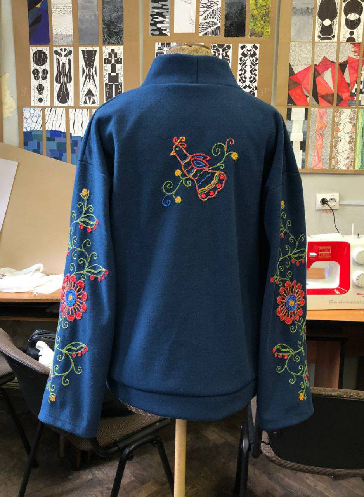
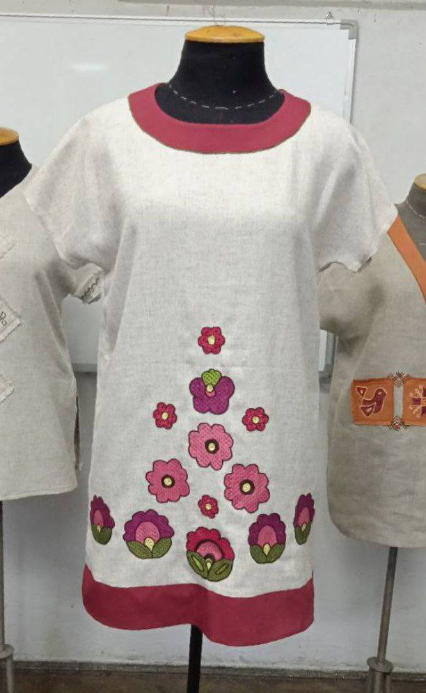
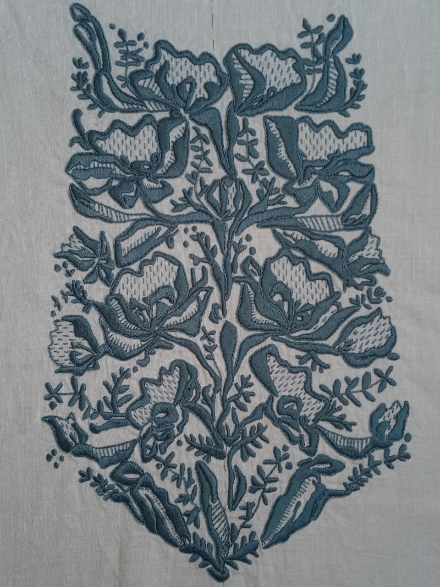
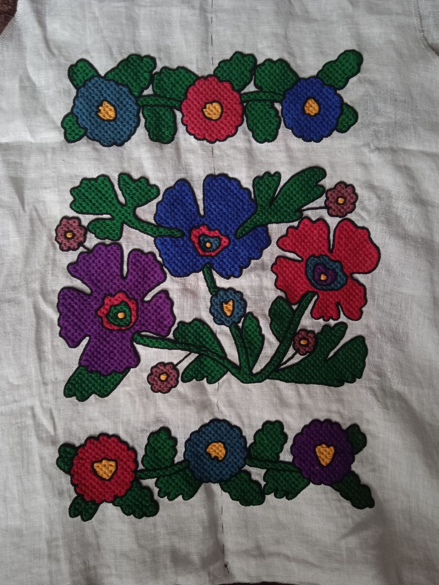
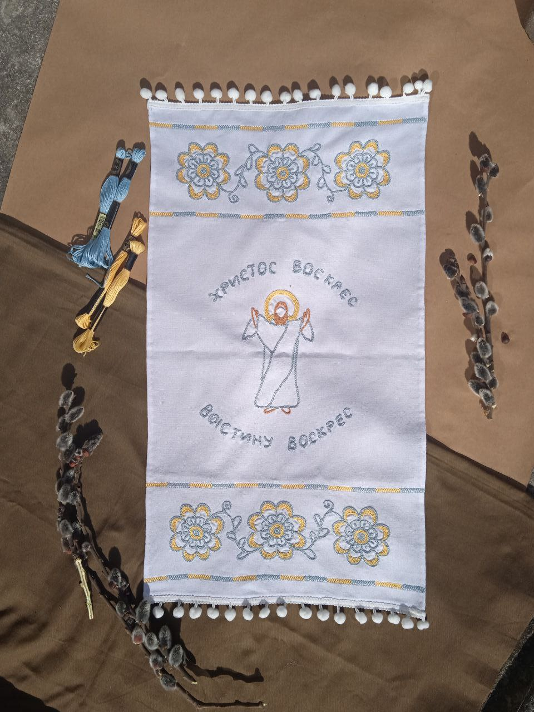
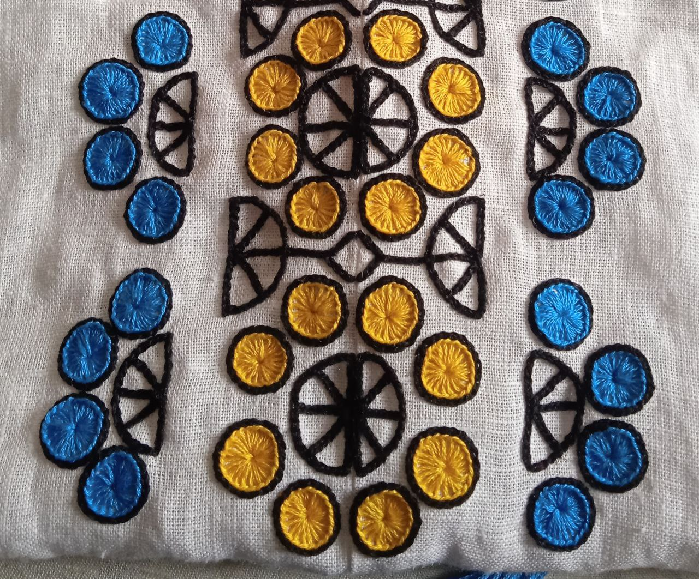
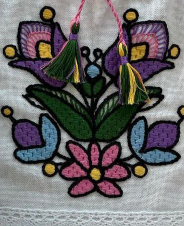

ПРИКЛАДИ РОБІТ
Приклади робіт виконаних ручною вишивкою
      Приклади створених програм для машинної вишивки: авторська розробка орнаментів із ретельним підбором кольорів.


Навчання за спеціальністю "Дизайн одягу" передбачає вивчення основ проектування, конструювання та виготовлення одягу, моделювання текстилю, розробки ескізів і сучасних технологій у дизайні. Студенти опановують художнє мислення, вивчають тренди моди, матеріалознавство, цифрові програми для дизайну й маркетингові аспекти в модній індустрії. Особлива увага приділяється розвитку творчих здібностей і вмінню реалізовувати ідеї в готові вироби.